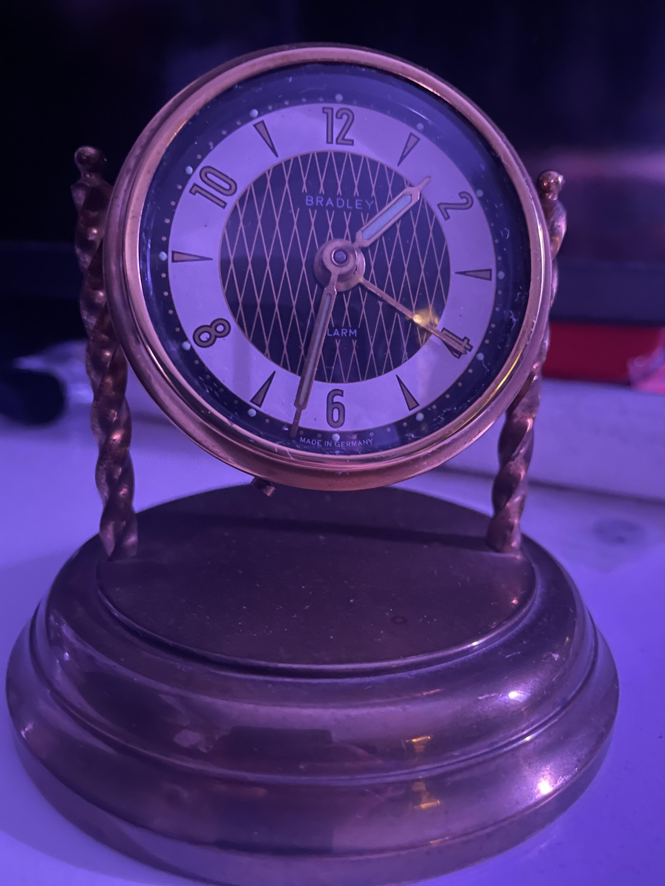

"Oh jeez, Morty — this clock is literally glowing because it’s filled with a mildly dangerous radioactive material that was perfectly normal to sell to 1950s consumers. Incredible. Dangerous. Cool."

Metadata:
Manufacturer: Bradley Time, West Germany
Era: Circa 1955
Movement: Mechanical wind-up
Radium lume on hands confirmed
Added to Tangnet on: 7-13-25
CPM Readout:
Background: 13 CPM
Clock face at detector: ~75 CPM (spicy!)